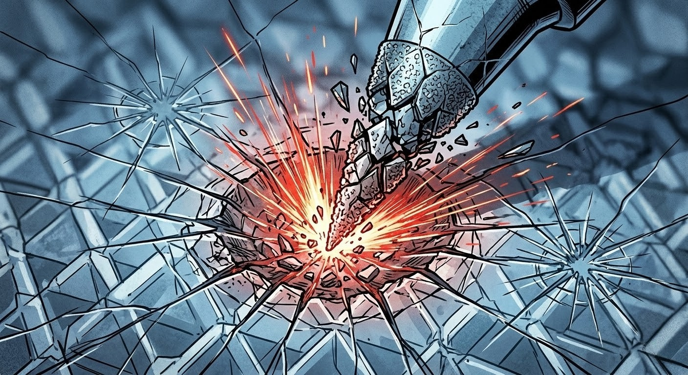
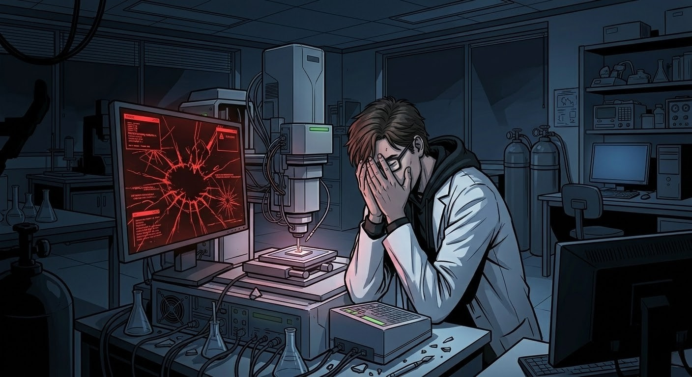
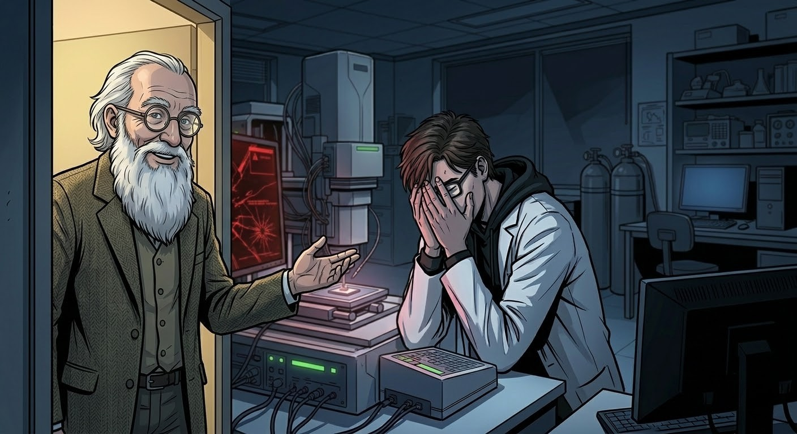
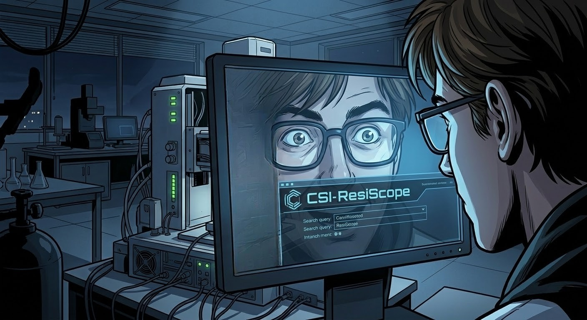
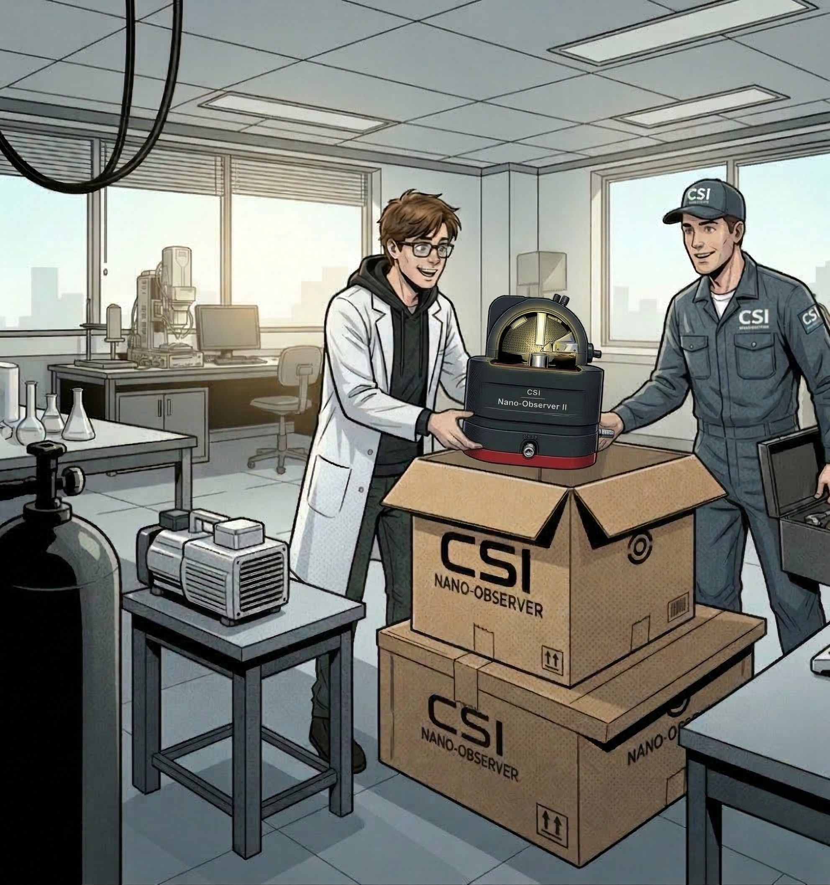
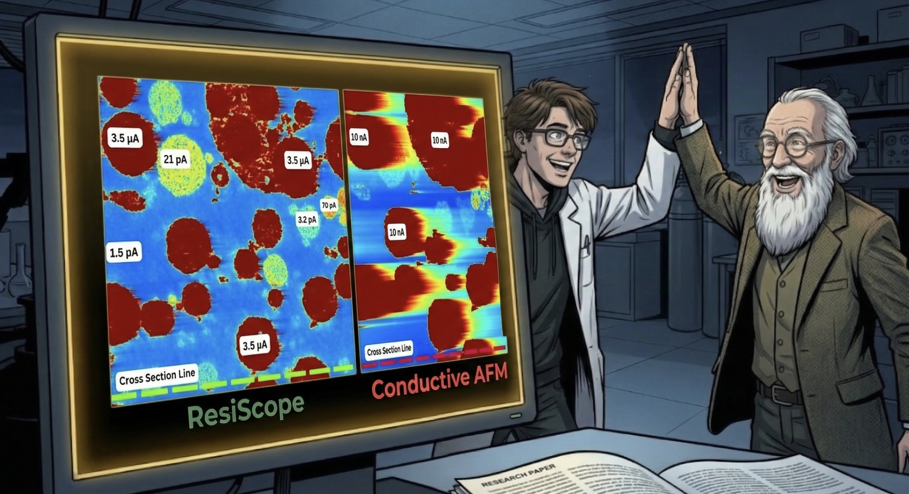

THE RESISCOPE
CHRONICLES
A Conductive AFM Adventure
★ THE QUEST FOR THE PERFECT MEASUREMENT ★
1

📅 2:47 AM. The lab is silent — except for the hum of yet another AFM machine.
Researcher (thinking)
AFM #3 this week... conductive mode again. If this one fails too, I'm going to lose my mind.
Inner Voice
Just ONE clean measurement! That's ALL I ask!!
2

C-R-A-C-K!!
⚠️ The probe tip — coated, conductive, and expensive — shatters on contact. Again.
Researcher
THAT WAS MY LAST CONDUCTIVE TIP!! Machine #4 — same result!!
3

🖥️ ERROR 0xDEAD: Signal saturated. Data corrupted. Measurement out of range.
Researcher (thinking)
Korean... American... Swiss... They all saturate. The dynamic range is just too narrow. Nothing works.
Also Researcher
Maybe... maybe I'm just bad at this?
4

🚪 A knock. Prof. Anderson — who hasn't left the building since 1987 — steps in.
Professor
Still fighting the conductive AFM beast, I see... Tell me, have you ever heard of the CSI ResiScope?
Researcher (thinking)
...Resi-what?
5
💡 The professor taps the researcher's shoulder. Something ignites in the air — literally.
⚡ CSI RESISCOPE — SPECS
Current Range10² → 10¹² pA
Dynamic Range10 ORDERS OF MAGNITUDE
Range Switch?NEVER. Simultaneous.
Saturation?Not anymore.
Professor
Instant measurement across ten orders of magnitude. From 10² to 10¹² — all in a single scan. No switching. No saturation.
Researcher
That's... 10² to 10¹²?! That's IMPOSSIBLE! Is this real?!
6

🔍 3:15 AM. The rabbit hole goes deep. Every paper. Every spec sheet. Every video.
Researcher (thinking)
"No manual range changes... no missed features... automatic logarithmic amplification... CSI Nano-Observer platform..." This is REAL. This solves EVERYTHING.
Researcher
Why didn't I know about this SOONER?!
7

K-CHING! ORDER PLACED!
📦 A few weeks later. The lab gets a very special delivery.
CSI Personnel
CSI Nano-Observer II with ResiScope module. All yours — let's do it.
Researcher
She's BEAUTIFUL!! Don't just stand there — LETS COMPLETE THE INSTALLATION RIGHT NOW!!
8

★ SUCCESS!! ★
First scan. Perfect data. Full dynamic range — every grain, every boundary, every defect — mapped in glorious conductive detail.
Researcher
10² to 10¹² — all in ONE scan! The paper is WRITING ITSELF! We're going to Nature!!
Professor
I've been trying to tell you about ResiScope for three years. You never asked.
— THE END —
Moral of the story: When you've tried every AFM on the market and nothing works...
...maybe it's time to ask your professor.
CSI ResiScope · Dynamic Range: 10² – 10¹² · No compromises. No saturation. No excuses.